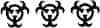

“Anlamadığım şu” diyordu Theo. “Siz üçünüz niye ölü değilsiniz?”
Gruptakiler kontrol odasındaki uzun masada oturuyorlardı, uyumak için kışlaya dönmüş olan Finn’le Rey hariç. Peter adrenalinin etkisinden çıkmıştı ve kırılmamış gibi görünen ayak bileğinin ağrısı hafif bir zonklamaya dönüşmüştü; birisinin soğutucudan alıp bezle sardığı bir parça buzu yaralı eklemine bastırıyordu. Az önce Zander Phillips’i, tanıdığı bir adamı öldürmüş olması belirgin bir hisse yol açmamıştı henüz. Bu bilgi yorumlayamayacağı kadar tuhaftı. Ama santralin anahtarı hâlâ Zander’ın boynunda asılıydı, yani kimliği konusunda şüphe yoktu. Theo’nun seçme şansı olmamıştı elbette; Zander tamamen dönüşmüştü. Aslında kapaktan zorla girmeye çalışan viral artık Zander Phillips değildi. Yine de Peter tetiği çekmeden önceki son anda viralin gözlerinde bir tanıma parıltısı – hatta rahatlama ifadesi gördüğü hissinden kurtulamıyordu bir türlü.
Saldırıdan sonra Theo, Caleb’ı iyice sorguya çekmişti. Çocuğun anlattıkları tamamen tutarlı değildi, ama bitkin ve korkmuş olduğu belliydi. Dudakları şişmiş ve çatlamıştı, alnında iri ve mor bir şişlik vardı, ayakları yara bere içindeydi. En çok ayakkabılarını kaybettiğine üzülüyor gibiydi; o siyah Nike Push-Offları alışveriş merkezindeki ayakkabıcıda bulduğunu, yepyeni olduklarını açıklamıştı. Vadide koşarken her nasılsa ayağından çıkmışlardı, ama çok korktuğu için pek fark etmemişti.
“Sana yeni ayakkabılar buluruz” demişti Theo. “Sen Zander’ı anlat.”
Caleb konuşurken bir yandan karnını doyuruyordu, peksimet yiyip su içiyordu. Altı gün öncesine kadar her şeyin normal olduğunu, sonra Zander’ın... tuhaf davranmaya başladığını açıkladı. Zander çok tuhaf davranmaya başlamıştı. Normalde zaten tuhaf biriydi, ama iyice tuhaflaşmıştı. Çitin dışına çıkmak istemiyordu ve hiç uyumuyordu. Bütün gece kendi kendine mırıldanarak kontrol odasında dolanıp duruyordu. Caleb bunu adamın elektrik santralinde fazla kalmasına yormuştu, ikmal ekibi gelince Zander’ın normal haline döneceğini düşünmüştü.
“Bir gün sahaya çıkacağımızı, at arabasını hazırlamamı söyledi. Burada oturmuş öğle yemeğimi yiyordum ki birden içeri dalıp bunu söyledi. Batı bölümündeki regülatörlerden birini değiştirmek istiyormuş. Tamam, dedim, ama ne acelesi var? Gözlerinde manyakça bir ifade vardı ve pis kokuyordu. Yani cidden leş gibi. Sen iyi misin diye sordum; hazırlan haydi, gidiyoruz dedi.”
“Bu ne zaman oldu?”
Caleb yutkundu. “Üç gün önce.”
Theo sandalyesinde öne eğildi. “Üç gündür dışarıda mıydın?”
Caleb başıyla onayladı. Peksimeti bitirmişti ve soya fasulyesi ezmesine geçti, parmaklarıyla yemeye başladı. “Katırı at arabasına bağlayıp dışarı çıktık, ama mesele şuydu. Batı sahasına gitmedik. Doğu sahasına gittik. Orada yıllardır hiçbir şey çalışmıyor; bütün türbinler ölü. Ayrıca çok uzak, at arabasıyla en az iki saatlik yol. Vakit öğleni geçmişti, zamanımız azalıyordu. Zander, dedim, batı şu tarafta dostum, burada ne işimiz var yahu? Bizi öldürmeye mi çalışıyorsun? Sonunda onarmak istediğini söylediği kuleye vardık; kule pas içindeydi. İflah olmazdı. Bunu dışarıdan bakınca anladım. Regülatörü değiştirmek filan işe yaramazdı. Ama Zander kafaya koymuştu, bu yüzden merdivene çıktım ve elimden geldiğince çabuk çalıştım. Yaptığım iş anlamlı gelmese de, canımızı boşuna tehlikeye atıyormuşuz gibi görünse de, bir bildiği vardır belki diye düşünüyordum. Neyse, sonra bir çığlık duydum.”
“Zander’ın çığlığı mıydı?”
Caleb hayır anlamında kafa salladı. “Katırındı. Dalga geçmiyorum, resmen çığlık attı. Hayatımda öyle bir ses duymamıştım. Aşağı bakınca katırın sallandığını ve taş dolu bir çuval gibi yere yığıldığını gördüm. Bir an gözlerime inanamadım. Kan. Epey kan vardı.” Yağlı ağzını elinin tersiyle sildi ve boş ezme tabağını iterek uzaklaştırdı. “Zander bunun tadının taşak gibi olduğunu söylerdi hep. Ben de ne zaman taşak yedin ki Zander, cidden bilmek istiyorum derdim. Ama üç gün aç kaldıktan sonra tadı fena gelmiyor.”
Theo sabırsızca iç geçirdi. “Caleb, lütfen ama. Kan...”
Caleb uzun uzun su içti. “Tamam, peki, evet. Kan. Zander katırın yanında diz çökmüştü, ben de Zander, ne oldu diye seslendim. Ayağa kalktı, baktım beline kadar soyunmuş, elinde bıçak var ve üstü başı kan içinde. Belirtileri gözden kaçırmışım bir şekilde. Merdiveni tırmanıp bana da saldıracak, beş saniye kadar zamanım var diye düşündüm. Ama saldırmadı. Kulenin dibine, payandalardan birinin gölgesine oturdu; bulunduğum yerden göremiyordum. Zander, diye seslendim aşağıya, dinle beni. Mücadele etmelisin. Yukarıda tek başınaydım. Biraz kendine gelmesini sağlayabilirsem kaçma fırsatı bulabilirim diye düşünüyordum.”
“Anlamıyorum” dedi Alicia. “Ne zaman hastalık kapmış olabilir ki?”
“Mesele bu ya” diye devam etti Caleb. “Ben de anlamadım. Sürekli yanındaydım.”
“Peki ya geceleri?” dedi Theo. “Zander’ın uyumadığını söylemiştin. Belki dışarı çıkmıştır.”
“Olabilir ama neden çıksın ki? Hem farklı görünmüyordu, üstünün başının kanlı olması dışında.”
“Peki ya gözleri?”
“Hiç değişmemişti. Görebildiğim kadarıyla turunculaşmamıştı. Cidden tuhaftı. Evet, kulenin tepesinde mahsur kalmıştım. Zander aşağıdaydı, dönüşmüş olabilirdi de olmayabilirdi de, ama eninde sonunda hava kararacaktı. Zander, diye seslendim, bak, aşağı iniyorum. Silahlı değildim, elimde sadece ingilizanahtarı vardı, ama belki beynini patlatıp kaçabilirim diye düşündüm. Ayrıca ondan anahtarı almam gerekiyordu bir şekilde. Onu merdivenden göremiyorum, bu yüzden aşağı üç metre kala atlamaya karar verdim. İneceğimi haber vermem iyi olmamıştı, ama kaybedecek bir şeyim yok, atlayacağım diye düşündüm. Atladım ve hemen doğrulup ingilizanahtarını savurmaya hazırlandım. Ama elimde yoktu. Zander elimden kapmıştı. Arkamda duruyordu. Yukarı dön, dedi bana.”
“Yukarı dön mü dedi?” Konuşan Arlo’ydu.
Caleb başıyla onayladı. “Dalga geçmiyorum. Aynen öyle dedi. Dönüşüp dönüşmediğini hâlâ anlayamıyordum. Ama bir elinde bıçak, diğer elinde ingilizanahtarı vardı, üstü başı kan içindeydi ve anahtar olmadan santrale giremezdim. Ne demek yukarı dön diye sordum, o da kuleye tırmanırsan daha güvende olursun dedi.” Delikanlı omuz silkti. “Üç gündür kulenin tepesindeydim, sizi Doğu Yolu’nda görene kadar.”
Peter ağabeyine baktı; Theo’nun da Caleb’ın anlattıklarına şaşırdığı yüzünden anlaşılıyordu. Zander’ın niyeti neydi? O sırada dönüşmüş müydü, dönüşmemiş miydi? Yıllardır hiç kimse enfeksiyonun ilk etkilerine tanık olmamıştı. Özellikle eski günlerden, Yürüyenlerin zamanından kalma bazı söylentiler vardı, tuhaf davranışlar görüldüğü söyleniyordu – sadece herkesin bildiği belirtiler, kan açlığı ve birden soyunmak değil. Tuhaf sözler, topluluk karşısında konuşma yapmak, manyakça atletik hareketlerde bulunmak. Bir Yürüyen’in Depo’ya girdiği ve kendi kendini yiyip öldürdüğü söyleniyordu; bir başkası bütün çocuklarını yataklarında öldürdükten sonra kendini yakmıştı; bir başkasıysa çırılçıplak soyunup Nöbetçi’nin gözü önünde iskeleye tırmanmış ve Gettysburg Konuşması’nın tamamını –bu konuşma Sığınak’taki sınıflardan birinin duvarında asılıydı– ve “Row, Row, Row Your Boat”un yirmi beş dizesini avaz avaz okuduktan sonra kendini yirmi metre aşağıdaki sert toprağa atmıştı.
“Peki ya dumanlar?” diye sordu Theo.
“İşin tuhaf tarafı bu. Aynen Zander’ın dediği gibi oldu. Hiç duman yoktu. En azından yaklaşmıyorlardı. Geceleri vadiden çıktıklarını görüyordum arada sırada. Ama bana ilişmediler. Türbin sahalarında avlanmayı sevmiyorlar, Zander oradaki hareketlilikten hoşlanmadıklarını söylerdi hep, belki de bununla ilgilidir, bilmiyorum.” Delikanlı duraksadı; Peter onun yaşadıklarının etkisini yeni yeni hissetmeye başladığını görebiliyordu. “Orası alışınca epey huzurlu geliyor aslında. Zander’ı bir daha görmedim. Kulenin dibinde dolandığını duyabiliyordum. Ama bana yanıt vermedi hiç. Tek şansımın ikmal ekibinin gelmesini beklemek ve sonra da kaçmaya çalışmak olduğunu anlamıştım artık.”
“Sonra da bizi gördün.”
“Avazım çıktığı kadar bağırdım inanın, ama beni duyamayacak kadar uzaktaydınız herhalde. Sonra Zander’ın ortadan kaybolduğunu fark ettim. Katırın da. Viraller leşi sürükleyerek götürmüşlerdir herhalde. Artık güneş batmak üzereydi. Ama suyum bitmişti ve kimse beni doğu sahasında aramaya gelmezdi. Bu yüzden inip şansımı denemeye karar verdim. Santrale bir kilometre kadar kalmışken birden her yerde dumanlar belirdi. Tamam dedim, işim bitti. Kulelerden birinin dibine saklandım ve ölmeyi bekledim. Ama nedense yaklaşmadılar. Orada ne kadar kaldım bilmiyorum, sonra baktığımda gitmişlerdi, etrafta tek bir duman bile yoktu. Artık bahçe kapısının kapalı olduğunu biliyordum, ama içeri bir şekilde girebilirim diye düşündüm herhalde.”
Arlo, Theo’ya döndü. “Bu çok saçma. Neden onu sağ bıraksınlar ki?”
“Çünkü onu takip ediyorlardı” diye araya girdi Alicia. “Onları çatıdan görebiliyorduk. Belki de bizi dışarı çekmek için yem olarak kullanıyorlardı? Bunu ne zamandan beri yapıyorlar ki?”
“Öyle bir şey yapmazlar.” Theo’nun yüz ifadesi sertleşti; sandalyesinde kasıldı. “Bak, Caleb’ın sağ salim kurtulmasına sevindim, yanlış anlama. Ama ikiniz de aptallık ettiniz. Bu santral durursa, elektrik kesilirse herkes ölür. Bunu neden açıklamak zorunda kaldığımı bilmiyorum, ama açıklamam gerekiyormuş anlaşılan.”
Peter’la Alicia susuyorlardı; söylenecek söz yoktu. Theo haklıydı. Peter sadece birkaç santim sola ya da sağa ateş etse şimdi hepsi ölü olacaklardı muhtemelen. Peter şans eseri isabet ettirdiğini biliyordu.
“Bütün bunlar Zander’a nasıl hastalık bulaştığını açıklamıyor” diye devam etti Theo. “Veya neden Caleb’ı kulenin tepesinde bırakıp gittiğini.”
“Onu boşver” dedi Arlo dizlerine şaplak vurarak. “Ben asıl şu silahları merak ediyorum. Kaç tane var?”
“On iki sandık, merdivenin altında” diye yanıtladı Alicia. “Çatıda da altı sandık.”
“Ve oldukları yerde kalacaklar” dedi Theo.
Alicia güldü. “Ciddi olamazsın.”
“Gayet ciddiyim. Bak az daha neler oluyordu. O tüfekler olmasa dışarı çıkabilir miydiniz?”
“Belki çıkamazdım. Ama Caleb onlar sayesinde yaşıyor. Ne dersen de, dışarı çıktığımıza memnunum. Bunlar sıradan silahlar değiller Theo. Yepyeniler.”
“Biliyorum” dedi Theo. “Onları gördüm. İnceledim.”
“Sahi mi?”
Theo başıyla onayladı. “Elbette.”
Bir an kimse konuşmadı. Alicia masada öne eğildi. “Kime aitler peki?”
Ama Theo yanıtı Peter’a bakarak verdi. “Babamıza.”
Theo gecenin son saatinde öyküyü anlattı. Gözlerini bir dakika daha açık tutamayacak halde olan Caleb uyumak için kışlaya gitmişti, Arlo da cila getirmişti, bazen Sur’da bir gece geçirdikten sonra yaptıkları gibi. Her birinin fincanına ikişer parmaklık cila koymuş ve fincanları masadakilere dağıtmıştı.
Theo doğuda, yaklaşık iki günlük mesafede eski bir Deniz Piyadeleri üssü bulunduğunu açıkladı. Twentynine Palms adlı bir yerdi. Üssün çoğu kumlar altında kalmıştı. Tesadüfen bulmak güçtü. Babaları silahları bir askeri sığınakta bulmuştu: sandıklardaydılar, temiz ve kuruydular, üstelik tüfek dışında silahlar da vardı. Tabancalar ve havan topları. Makineli tüfekler ve el bombaları. Bir garaj dolusu taşıt, hatta iki tane tank. Babaları ve Willem Amca ağır silahları taşıyamamışlardı, çünkü taşıtlardan hiçbiri çalışmıyordu, ama tüfekleri at arabasıyla getirmişlerdi – böyle üç yolculuk yapmışlardı, Willem öldürülene kadar.
“Peki niye kimseye söylemedi?” diye sordu Peter.
“Şey, söyledi. Annemize ve başka birkaç kişiye söyledi. Sonuçta tek başına gitmiyordu. Albay biliyordu bence. Herhalde Yaşlı Chou da. Zander mutlaka biliyordu, çünkü silahlar burada saklanıyordu.”
“Ama Sanjay bilmiyordur” diye araya girdi Alicia.
Theo kaşlarını çatarak kafa salladı. “İnan bana, Sanjay babamın söyleyeceği en son kişiydi. Yanlış anlamayın, Sanjay işinde iyidir. Ama yolculuklara başından beri karşıydı, hele Raj öldükten sonra.”
“Doğru” dedi Arlo. “O üç kişiden biriydi.”
Theo başıyla onayladı. “Bence Sanjay, ağabeyinin babamızla yolculuk etmek istemesini içine sindiremedi hiç. Sebebini tam olarak anlamadım ama aralarında çok eskiden kalma bir husumet vardı. Raj öldürüldükten sonra araları iyice açıldı. Sanjay Hane Halkı’nı babamıza düşman etti, onu Şeflikten attılar, yolculukları yasakladılar. O zaman babamız tek başına yolculuk etmeye başladı.”
Peter cila fincanını burnuna götürdü, içkinin keskin kokusunun burun deliklerini yaktığını hissetti ve fincanı masaya bıraktı. Hangisinin –bu sırrı babasının mı yoksa Theo’nun mu kendisinden gizlemesinin– daha can sıkıcı olduğunu bilmiyordu.
“Peki tüfekleri niye sakladılar?” diye sordu. “Neden dağa getirmediler?”
“Onlarla ne yapacaklardı ki? Düşünsene kardeşim. Siz dışarıdayken hepimiz sesinizi duyduk. Saydığım kadarıyla ikiniz otuz altı el ateş ettiniz ve kaç tane viral öldürdünüz, iki tane mi? O tüfekleri Nöbetçilere verse en fazla bir mevsim idare ederlerdi. İnsanlar kendi gölgelerine bile ateş ederlerdi. Hatta birbirlerini vurdukları bile olurdu bazen. Bence babamızın en çok korktuğu buydu.”
“Kaç tane kaldı?” diye sordu Alicia.
“Askeri sığınakta mı? Bilmem. Görmedim ki.”
“Ama yerini biliyorsun.”
Theo cilasını yudumladı. “Lafı nereye getireceğini anladım, daha fazla konuşma. Babamızın, şey, bazen tuhaf fikirleri olurdu. Peter, bunu sen de benim kadar iyi bilirsin. Geride sadece bizim kaldığımızı, başka kimsenin kalmadığını kabullenemiyordu. Başkalarını bulursa ve silahları varsa...” Sustu.
Alicia sandalyesinden kalktı. “Bir ordu” dedi gözlerini hepsinde gezdirerek. “İstediği buydu, değil mi? Bir ordu kurmak istiyordu. Dumanlarla savaşmak için.”
“Bu anlamsız” dedi Theo; Peter ağabeyinin sesindeki acı tonu fark etti. “Anlamsız ve delilik. Ordu’nun silahları vardı da ne oldu? Bizi kurtarmak için döndüler mi hiç? Onca silahları, roketleri ve helikopterleri varken? Hayır, dönmediler ve sebebini söyleyeyim. Çünkü hepsi öldü.”
Alicia pes etmedi. “Eh, bence iyi bir fikir” dedi. “Hatta muhteşem bir fikir.”
Theo acı acı güldü. “Senin böyle düşüneceğini tahmin etmiştim.”
“Ben de yalnız olduğumuzu sanmıyorum” diye devam etti Alicia. “Başkaları vardır. Dışarıda bir yerlerde.”
“Sahi mi? Nereden biliyorsun?”
Alicia birden şaşırdı. “Hiç” dedi. “Biliyorum işte.”
Theo kaşlarını çatarak fincanına baktı, içkisini çalkaladı. “İstediğin şeye inanabilirsin” dedi usulca, “ama bu onu doğru kılmaz.”
“Babamız inanıyordu” dedi Peter.
“Evet, inanıyordu kardeşim. Ve bu yüzden öldü. Bunu hiç konuşmayız biliyorum, ama gerçek bu. İnsan Merhamet Nöbeti sırasında bir sürü şeyi anlıyor, inan bana. Babam ölmek için gitmedi. Öyle sananlar onu hiç tanımamış demektir. Gitti çünkü gerçeği bilmemeye daha fazla dayanamadı. Yaptığı cesurca ve aptalcaydı ve aradığı yanıtı buldu.”
“Bir Yürüyen gördü. Milagro’da.”
“Olabilir. Bence o görmek istediği şeyi gördü. Ama fark etmez. Tek bir Yürüyen neyi değiştirir ki?”
Theo’nun umutsuzluğu Peter’ı derinden sarsmıştı; sadece yenilmişlik değildi bu, ihanetti.
“Bir tane varsa başkaları da vardır” dedi Peter.
“Dumanlar var kardeşim. Dünyanın bütün silahları bile bunu değiştirmez.”
Bir an kimse konuşmadı. Şu fikir havadaydı, dillendirilmese de somuttu: Elektrik ne zaman tamamen kesilecekti? Ne zaman elektrikten anlayan tek bir kişi bile kalmayacaktı?
“Buna inanmıyorum” dedi Arlo. “Senin inanmana da inanamıyorum. Sadece dumanlar varsa her şeyin ne anlamı var ki?”
“Ne anlamı mı var?” Theo yine fincanına baktı. “Keşke bilsem. Bence anlamlı olan tek şey hayatta kalmak. Işıkları mümkün olduğunca uzun süre yakmak.” Cilayı dudaklarına götürdü ve bir dikişte bitirdi. “Birazdan şafak sökecek millet. Caleb uyusun, ama diğerlerini uyandırın. İlgilenmemiz gereken cesetler var.”
Dört taneydiler. Üçü bahçedeydi, biri de (Zander) çatıda yatıyordu, beton zeminde kapağın yanında, çıplak uzuvları X şeklinde uzanmış halde yatıyordu, şaşkın bir hali vardı. Peter’ın tüfeğinden çıkan mermi kafasının tepesini delmişti, parçalanmış kafatasının bir parçası kafa derisinden sarkıyordu. Sabah güneşinde küçülmeye başlamıştı bile; kararan etinden gri bir sis yükseliyordu.
Peter virallerin görünüşüne alışkın olsa da yakından bakınca hâlâ huzursuzlandığını fark etti. Yüz hatlarındaki neredeyse bebeksi denebilecek pürüzsüzlük; ellerle ayakların kıvrıklığı ve jilet gibi keskin pençeler; uzuvlarla gövdenin kaslılığı ve uzun, şişkin boyun; çelik çiviler gibi sivri dişler. Lastik botlarla eldivenler giymiş ve yüzüne bir bez bağlamış olan Finn uzun bir yaba kullanarak anahtarı siciminden tutup aldı ve bir metal kovaya attı. Anahtarı alkol döküp yaktılar ve güneşte kurumaya bıraktılar; alevlerin öldürmediği şeyleri güneş öldürürdü. Sonra cesedi tahta gibi kaskatı olan Zander’ı bir muşambanın üstüne yuvarladılar ve muşambayı boru şekline getirerek onu sarmaladılar. Arlo’yla Rey muşambayı uçlarından tutup çatının kenarına taşıdılar ve aşağıdaki bahçeye attılar.
Dört cesedi de çitin ardına attıklarında güneş tepedeydi ve sıcaktı. Bir boruya yaslanan Peter, Theo’nun cesetlerin üstüne alkol dökmesini rüzgârın estiği taraftan seyretti. Kendini işe yaramaz hissediyordu, ama ayak bileği incinmişken pek işe yaramazdı. Alicia elinde tüfeklerden biriyle nöbet tutuyordu. Caleb nihayet uyanmıştı ve diğerleriyle birlikte seyretmek için dışarı çıkmıştı. Peter onun bir çift uzun deri çizme giymiş olduğunu gördü.
“Zander’ındı” diye açıkladı Caleb. Delikanlı biraz suçluluk duygusuyla omuz silkti. “Yedek çizmeleriydi. İtirazı olmazdı sanırım.”
Theo kesesinden bir kutu kükürtlü kibrit çıkardı ve maskesini indirdi. Diğer elinde bir pürmüz tutuyordu. Gömleğinin boyun ve koltuk altı kısımlarında halka şeklinde, geniş ter lekeleri vardı. Depo’dan alınma eski bir gömlekti, yenleri çoktan gitmişti, yakası lime limeydi; göğüs cebine Armando yazısı işlenmişti kıvrık harflerle.
“Söyleyecek sözü olan?”
Peter konuşma yapmak istedi, ama aklına bir şey gelmedi. Çatıdaki cesedi görmek o rahatsız edici hissi, Zander’ın onu öldürmesini kolaylaştırdığı – Zander’ın hâlâ Zander olduğu hissini azaltmamıştı. Ama o yığındaki bütün cesetler bir zamanlar insandılar. Belki de biri Armando’ydu.
“Tamam, ben yaparım” dedi Theo ve genzini temizledi. “Zander, iyi bir mühendistin ve iyi bir arkadaştın. Kimsenin arkasından konuşmazdın ve bu yüzden sana teşekkür ediyoruz. Huzur içinde yat.” Kibriti çakıp pürmüzü yaktı ve alevi yığına doğrulttu.
Önce deriler yandı, kâğıt gibi buharlaştı ve sonra kemikler göçtü, patlayıp kül bulutları havalandırdı. Bütün cesetler bir dakikada yanıp kül oldu. Alevlerin sonuncusu da sönünce kalıntıları Rey’le Finn’in kazdığı sığ çukura gömüp toprakla örttüler.
Toprağı sıkıştırırlarken Caleb konuştu. “Sadece şunu söylemek istiyorum ki, bence direndi. İstese beni öldürebilirdi.”
Theo küreği yana bıraktı. “Yanlış anlama” dedi, “ama öldürmemiş olması beni kaygılandırıyor.”
Sonraki günlerde Peter o geceki olayları düşündü, zihninde canlandırdı. Sadece çatıda olanları ve Caleb’ın tuhaf kule öyküsünü değil, tüfeklerden bahsedilirken ağabeyinin acı ses tonunu da. Çünkü Alicia haklıydı; tüfeklerin bir anlamı vardı. Peter, Önceki Zaman’ın dünyasının yok olduğunu düşünmüştü hayatı boyunca. Sanki bir bıçak zamanı ortasından, öncesi ve sonrası şeklinde ikiye ayırmıştı. Bu iki yarının arasında köprü yoktu; savaş kaybedilmişti, artık Ordu yoktu, Koloni’nin ötesindeki dünya artık kimsenin hatırlamadığı bir tarihin açık mezarıydı. Aslında Peter, babasının dışarıdaki karanlıkta ne aradığına pek kafa yormamıştı. Aradığı şeyin çok açık olduğunu düşündüğü içindi herhalde: insanlar, kurtulan başkaları. Ama babasının tüfeklerinden birini tutunca –şimdi bile, kışlada yatıp da ayak bileğinin iyileşmesini beklerken bile, o tüfeği tutuşunu anımsıyordu– daha fazlasını hissetmişti, sanki geçmiş tüm gücüyle birlikte içine dolmuştu. Yani belki de babasının Uzun Yolculuklarda yaptığı buydu. Dünyayı hatırlamaya çalışıyordu.
Theo, Uzun Yolculuklara çıkan herkesin amacının bu olduğunun farkındaydı mutlaka. Peter annesinin öldüğü sabah söylediği sözü, Ağabeyin Theo’ya göz kulak ol. O senin gibi güçlü değil, sözünü Theo’ya söylememeye çok önceden karar vermişti. Gerçek gerçekti ve yıllar geçtikçe Peter kendisi hakkında bu gerçeği bilmenin katlanılabilir, neredeyse rahatlatıcı olduğunu fark etmişti. Babaları zor ve tehlikeli bir işe girişmişti, bütün gerçeklerin karşısında inancına tutunmuştu ve Peter bu yükü sırtlayacak –ikisi adına sırtlayacak– Jaxon’ın Theo olmasını kabullenebilirdi. Ama uğraşmanın anlamsız olduğunu, tek yapabileceklerinin ışıkları mümkün olduğu kadar uzun süre yakmak olduğunu söylemek, üstelik Sığınak’ta bir Küçük’ü olan Arlo’ya söylemek... Peter’ın tanıdığı Theo’nun yapacağı iş değildi. Ağabeyiyle ilgili bir şeyler değişmişti. Peter bunun ne olduğunu merak etti.
Santralde beş gün kaldılar. Finn’le Rey ilk günü çite tekrar elektrik vermekle ve ardından batı sahasına gidip çalışmakla, türbin gövdelerini yağlamakla geçirdiler. Arlo, Theo ve Alicia onlara sırayla eşlik ettiler, ikişer ikişer gittiler ve her seferinde günbatımından çok önce dönüp santralin kapısını kilitlediler. Yapacak işi olmayan Peter üç kâğıdı eksik bir iskambil destesiyle tek başına oynamaya ve depoda bulduğu bir kutu kitabı karıştırmaya başladı. Türlü türlü kitaplar vardı: Charlie ve Çikolata Fabrikası, Osmanlı İmparatorluğu Tarihi, Zane Grey’in Mor Bilgenin Atlıları romanı (Kovboy Romanı Klasikleri). Her kitabın arkasındaki karton cepte RIVERSIDE BELDESİ HALK KÜTÜPHANESİNİN MALIDIR yazısı vardı ve ceplerin içine üzerinde mürekkeple yazılmış soluk tarihler bulunan birer kart konmuştu: 7 Eylül 2014; 3 Nisan 2012; 21 Aralık 2016.
Ekip sahadan döndükten sonra “Bunları kim getirdi?” diye sordu bir gece Theo’ya. Peter’ın yatağının yanında, yerde bir kitap yığını duruyordu.
Theo lavaboda yüzünü yıkıyordu. Dönüp ellerini gömleğinin önüne sildi. “Epeydir buradalar sanırım. Zander doğru dürüst okuma bilmediği için kaldırmış olabilir. İyi bir şeyler var mı?”
Peter okuduğu kitabı kaldırdı: Moby-Dick ya da Balina.
“Açıkçası bunun İngilizce olduğuna bile emin değilim” dedi Peter. “Bir günde bir sayfa okudum.”
Ağabeyi yorgun bir kahkaha attı. “Ayak bileğine bakalım.”
Theo, Peter’ın yatağının kenarına oturdu. Peter’ın ayağını dikkatle tutup eklem yerinden çevirdi. Saldırı gecesinden beri pek konuşmamışlardı. Aslında kimse pek konuşmamıştı.
“Eh, daha iyi görünüyor.” Theo kirli sakallı çenesini okşadı. Peter ağabeyinin gözlerinin bitkinlikten çukura kaçmış olduğunu gördü. “Şişlik inmiş. Ata binebilir misin sence?”
“Buradan kurtulmak için gerekirse sürüne sürüne giderim.”
Ertesi sabah kahvaltıdan sonra yola çıktılar. Arlo bir sonraki ikmal ekibi gelene kadar Rey ve Finn’le birlikte kalmayı kabul etmişti. Caleb da kalmak istediğini söyledi, ama Theo onu vazgeçirdi – Arlo kalıyordu zaten ve çitin dışına çıkmadıkları sürece dördüncü biri gereksizdi. Hem Caleb çok şey yaşamıştı.
Diğer mesele tüfeklerdi. Theo onları oldukları yerde bırakmak istiyordu; Alicia hepsini geride bırakmanın anlamsız olduğunu savunuyordu. Zander’a ne olduğunu veya dumanların ellerinde fırsat varken Caleb’ı neden öldürmediklerini hâlâ bilmiyorlardı. Tüfeklerin bir kısmını yanlarına almaya ama Sur’un dışında saklamaya karar verdiler. Geri kalanlarsa merdivenin altında kalacaktı.
“Onlara ihtiyacım olacağını sanmıyorum” dedi Arlo gruptakiler atlarına binerken. “Dumanlar gelirse durmadan konuşarak onları sıkıntıdan öldürebilirim.” Ama omzuna bir tüfek asmıştı. Alicia ona tüfeği doldurmayı ve temizlemeyi öğretmişti, ayrıca bahçede birkaç kez ateş edip pratik yapmasına izin vermişti. Arlo “Vay be!” diye haykırmıştı kalın sesiyle ve bir el daha ateş edip direkteki hedefi yere düşürmüştü. “Muhteşem!” Peter, Theo’nun haklı olduğunu düşünmüştü; insan ateşli silahları kullanmaya başlayınca vazgeçmek zor oluyordu.
“Ciddiyim Arlo” diye uyardı Theo. Günlerdir hareketsiz kalan atlar bir an önce yola çıkmak istiyor, ayaklarını yere vurarak toz kaldırıyorlardı. “Bir terslik var. Çitin içinde kalın. Her gece ilk gölgeyi görmeden önce kapıyı kilitleyin. Tamam mı?”
“Merak etme.” Sakalının arasından sırıtan Arlo, Finn’le Rey’e baktı; Peter o ikisinin yüzlerinin asık olduğunu fark etti. Santralde Arlo’ya ve öykülerine mahkûm olacaklardı; belki de Arlo onlara şarkı söyleyecekti, gitarsız bile olsa. Arlo’nun boynunda Zander’ın cesedinden aldıkları anahtar asılıydı. Diğer anahtarsa Theo’daydı.
Arlo “Aaa, yapmayın çocuklar” diye seslendi penselere el çırparak. “Neşelenin biraz. Çok eğleneceğiz.” Ama Theo’nun atına yaklaşırken birden ciddileşti. “Bunu kesene koy” dedi Arlo usulca, ona katlı bir kâğıt vererek. “Leigh’le bebek için, bir şey olursa diye.”
Theo kâğıdı bakmadan kesesine koydu. “On gün. İçeride kalın.”
“On gün.”
Vadiye girdiler. Artık yanlarında at arabası olmadığından Doğu Yolu’nu es geçerek Banning’e tarlalardan gidip yolu birkaç kilometre kısalttılar. Kimse konuşmuyordu; enerjilerini uzun yolculuğa saklıyorlardı.
Kasabaya yaklaşırlarken Theo dikeldi.
“Az kalsın unutuyordum.” Elini eyer torbasına soktu ve altı gün önce Michael’ın Sur kapısında kendisine verdiği tuhaf nesneyi çıkardı. “Bunun ne olduğunu hatırlayan var mı?”
Caleb atını ona yaklaştırdı ve anakartı Theo’dan alıp inceledi. “Bu bir anakart. Intel çipli, Pion serisi. Şu dokuz rakamını görüyor musun? Ondan anlayabilirsin.”
“Bunu nereden biliyorsun?”
“Bilmek zorundayım.” Caleb omuz silkerek anakartı Theo’ya geri verdi. “Türbin kumandalarında Pionlar var. Bizimkiler daha sağlam, Ordu malı, ama temelde aynılar. Çok dayanıklı ve hızlılar. Hızaşırtmasız on altı gigahertz.”
Peter, Theo’nun yüz ifadesine bakıyordu; Theo da bunlardan hiçbir şey anlamamıştı.
“Eh, Michael bir tane istiyor.”
“Keşke söyleseydin. Santralde bir sürü yedek var.”
Alicia güldü. “Beni şaşırtıyorsun Caleb. Devre gibi konuşuyorsun. Siz penselerin okuma bildiğinizi bile bilmiyordum.”
Caleb eyerinde dönüp ona baktı. Ama gücenmişse bile belli etmedi. “Dalga mı geçiyorsun? Santralde yapacak başka ne var ki? Zander kitap almak için kütüphaneye gidip duruyordu sürekli. Alet odasında kutular dolusu kitap var. Hem de sırf teknik kitaplar değil. Herif her şeyi okuyordu. Kitaplar insanlardan daha ilginçmiş.”
Bir an kimse konuşmadı.
“Ne dedim ki?” diye sordu Caleb.
Kütüphane kasabanın kuzey ucundaki Empire Vadisi Fabrika Satış Merkezi’nin civarındaydı: Etrafı uzun çalılarla kaplı sert toprakla çevrili, alçak, kare şeklinde bir binaydı. Bir benzin istasyonunun arkasına gizlenip atlarından indiler; Theo eyer torbasından dürbünü çıkarıp binayı inceledi.
“Kumla dolmuş epey. Ama zemin katın yukarısındaki pencereler hâlâ sağlam. Bina iyi durumda görünüyor.”
“İçini görebiliyor musun?” diye sordu Peter.
“Güneş fazla parlak, camlardan yansıyor.” Theo dürbünü Alicia’ya verip Pabuç’a döndü. “Emin misin?”
“Zander’ın buraya geldiğine mi?” Delikanlı başıyla onayladı. “Evet, eminim.”
“Onunla gittin mi hiç?”
“Şaka mı yapıyorsun?”
Alicia daha iyi bakabilmek için bir çöp tenekesine basarak istasyonun çatısına tırmanmıştı.
“Bir şey var mı?”
Alicia dürbünü indirdi. “Haklısın, güneş fazla parlak. Ama içeride bir şey olduğunu sanmıyorum, çünkü pencereler sağlam.”
“Zander da hep öyle derdi” diye ekledi Caleb.
“Anlamıyorum” dedi Peter. “Niye buraya tek başına geliyordu ki?”
Alicia aşağı atladı. Ellerini kazağının önüne sildi ve terli saçlarının yüzüne düşmüş bir tutamını geriye attı. “Bence bir bakmalıyız. Vakit öğlen, bundan iyi fırsat bulamayız.”
Theo’nun yüzü Neden şaşırmadım? diyordu. Peter’a döndü. “Neye oy veriyorsun?”
“Ne zamandan beri oylama yapıyoruz?”
“Şu dakikadan beri. Bu işi yapacaksak oybirliği gerekiyor.”
Peter, Theo’nun yüz ifadesini yorumlamaya, ne yapmak istediğini kestirmeye çalıştı. Zor bir seçimle karşı karşıyaydı. Neden bu? diye düşündü. Neden şimdi?
Başını evet anlamında salladı.
“Tamam Lish” dedi Theo tüfeğini alarak. “İstediğin oldu, duman avına çıkıyoruz.”
Atları Caleb’a emanet ettiler ve binaya uzun bir hat halinde yaklaştılar. Kumlar pencerelerin büyük kısmını örtmüştü, ama kısa bir merdivenin tepesindeki ön kapıya kadar yükselmemişti. Kapı kolayca açıldı; içeri girdiler. Bir çeşit holdeydiler. Kapının hemen iç tarafındaki duvarda solmuş ama hâlâ okunaklı kâğıtlarla kaplı bir ilan panosu vardı. SATILIK ARABA, ’14 NISSAN SERATA, DÜŞÜK KİLOMETRELİ. HEMEN KİLO VERİN, NASIL YAPILACAĞINI BANA SORUN! BEBEK BAKICISI ARANIYOR, İKİNDİLERİ, BAZI AKŞAMLAR, ARABALI. ÇOCUK MASALLARI SAATİ, SALI VE PERŞEMBE GÜNLERİ, 10.30-11.30. Ve diğerlerinden büyük olan, kıvrılmış, sarı bir kâğıtta şunlar yazılıydı:

SAĞ KALIN. İYİ IŞIKLANDIRILMIŞ YERLERDE KALIN.
HER TÜRLÜ ENFEKSİYON BELİRTİSİNİ BİLDİRİN.
YABANCILARI EVİNİZE ALMAYIN.
GÜVENLİ BÖLGELERDEN ANCAK BİR HÜKÜMET
GÖREVLİSİ TALİMAT VERİRSE ÇIKIN.
İçeriye, otoparka bakan uzun pencerelerin aydınlattığı geniş bir odaya girdiler. Hava sıcak ve boğucuydu.
Danışma masasında bir ceset oturuyordu.
Kadın –Peter onun kadın olduğunu anladı– kendini vurmuşa benziyordu. Hâlâ elinde tuttuğu küçük altıpatlar kucağına düşmüştü. Ceset kösele gibi kahverengiydi, kadının kurumuş etleri kemiklerinin üstünde gerilmişti, ama şakağındaki mermi deliği açıkça görülüyordu. Başı yana eğikti, yere düşürdüğü bir şeyi ararcasına.
“Arlo’nun bunu görmediğine sevindim” diye mırıldandı Alicia.
Sessizce rafların arasına girdiler. Yere öyle çok kitap saçılmıştı ki sanki karların üstünde yürüyorlardı. Arka taraftan dolanıp ön tarafa gittiler; Theo merdiveni tüfeğinin namlusuyla gösterdi.
“Gözünüzü dört açın.”
Merdivenin tepesindeki geniş oda, pencerelerden giren gün ışığıyla aydınlanıyordu. Ferah bir odaydı: Sıra sıra dizilmiş yataklara yer açmak için raflar kenarlara itilmişti.
Her yatakta bir ceset vardı.
“Elli civarında vardır” diye fısıldadı Alicia. “Burası bir tür hastane mi?”
Theo odada ilerledi, yatakların arasından usulca geçti. Havada tuhaf bir misk kokusu vardı. Theo bir sıranın yarısındaki yataklardan birinin yanında durdu ve eğilip küçük bir nesneyi aldı. Çürümüş kumaştan yapılma gevşek bir şeydi. Kaldırıp Peter’la Alicia’ya gösterdi. Bir bez bebek.
“Sanmıyorum.”
Görüntüler Peter’ın zihninde anlamlı bir bütün oluşturmaya başladı. Cesetlerin küçüklüğü. Bir deri bir kemik ellerin tuttuğu oyuncak hayvanlar ve bebekler. Peter ilerlerken plastik bir şeye basıp ezdiğini hissetti ve duydu. Bir şırınga. Düzinelerce vardı, yere saçılmışlardı.
Birden gerçeği anlayınca yumruk yemiş gibi oldu.
“Theo, bu... bunlar...” Daha fazla konuşamadı.
Ağabeyi merdivene yönelmişti bile. “Gidelim buradan.”
Dışarı çıkana kadar durmadılar. Çıkınca kapının önünde durup derin soluklar aldılar. Peter uzakta Caleb’ın benzin istasyonunun çatısında ayakta durduğunu, hâlâ etrafı dürbünle taradığını görebiliyordu.
“Olup bitenlerin farkındaydılar herhalde” dedi Alicia usulca. “Böylesinin daha iyi olduğuna karar verdiler.”
Theo tüfeğini omzuna asıp uzun uzun su içti. Yüzü kül rengiydi; Peter ağabeyinin ellerinin titrediğini fark etti. “Lanet olası Zander” dedi Theo. “Niye buraya geliyordu ki?”
“Arka tarafta da merdivenler var” dedi Alicia. “Oraya da bakmalıyız.”
Theo tükürüp hayır anlamında kafa salladı sertçe.
“Boşver Lish” dedi Peter.
“Binanın tamamına bakmayacaksak niye geldik ki?”
Theo hışımla döndü. “Burada bir saniye daha kalmak istemiyorum.” Kararını vermişti, vazgeçmeyecekti. “Yakacağız. İtiraz istemiyorum.”
Raflardaki kitapları alıp danışma masasının önünde bir yığın oluşturdular. Kâğıtlar çabucak tutuştu, alevler kitaptan kitaba sıçradı. Geri geri giderek kapıdan çıktılar ve binanın yanmasını elli metre öteden seyrettiler. Peter matarasından bir yudum aldı, ama ağzındaki tadı hiçbir şey silemezdi; ceset tadını, ölüm tadını. Hayatının sonuna kadar unutamayacağı bir şey gördüğünü biliyordu. Zander buraya sadece kitaplar için gelmemişti. Çocukları görmeye gelmişti.
Tam o sırada binanın dibindeki kumlar kımıldamaya başladı.
Önce Peter’ın yanında duran Alicia gördü.
“Peter...”
Kumlar çöktü; viraller bodrum pencerelerini örten kumların arasından fırladılar. Altı virallik bir gruptu, alevlerden kaçarken öğle güneşinin parlak ışığına çıkmışlardı.
Çığlık attılar. Yüksek, tiz inlemeleri havayı ıstırapla ve hiddetle doldurdu.
Artık kütüphanenin tamamı yanıyordu. Peter tüfeğini kaldırıp tetiği aradı telaşla. Hareketleri hayal meyal, dikkatsiz geliyordu. O sahnedeki her şey sadece yarı gerçek gibiydi, zihni onlardan soyutlanmıştı. Üst pencerelerden döne döne boşanan yoğun ve kara dumanların arasından başka viraller çıkıyordu, camlar patlıyor ve ışıltılı bir yağmur halinde yere yağıyordu, virallerin etleri yanıyordu, arkalarında sıvı alevden izler bırakıyorlardı. Peter ateş etme niyetiyle tüfeğini kaldırana kadar çok uzun bir zaman geçmişti sanki. İlk grup kütüphane basamaklarının kumların yukarısındaki kısmının gölgesine sığınmıştı, birbirlerine sokulmuşlardı, yüzlerini saklambaç oynayan Küçükler gibi yere bastırmışlardı.
“Peter, burada kalamayız!”
Peter Alicia’nın sesini duyunca kendine geldi. Yanındaki Theo donakalmış gibiydi, tüfeğinin namlusu yere çevriliydi faydasızca, yüzü sarkıktı ve faltaşı gibi açılmış gözleri donuktu: Neye yarar ki?
Theo gözlerini Peter’a çevirdi. “Ah, kardeşim” dedi. “Hapı yuttuk galiba.”
“Peter” diye yalvardı Alicia, “yardım et bana.”
Theo’yu birer kolundan tuttular; otoparkın yarısını geçtiklerinde Theo kendi başına koşmaya başladı. Gerçekdışılık hissinin yerini tek bir arzu almıştı: kaçmak, kurtulmak. Benzin istasyonunun köşesini dönünce Caleb’ın at sırtında dörtnala uzaklaştığını gördüler. Atlarına binip Caleb’ın peşinden gittiler. Peter arkada başka pencerelerin patladığını duyuyordu. Alicia bir yeri gösteriyor, rüzgârda sesini duyurmak için haykırıyordu: alışveriş merkezi. Caleb oraya gidiyordu. Dörtnala giderek bir kumulun üstünden atlayıp boş otoparka girdiklerinde Caleb’ın binanın batı girişinin önünde atından atladığını gördüler. Hayvanın kalçasına şaplak vurdu ve at koşup giderken Caleb açık kapıdan içeri daldı.
“İçeri!” diye haykırdı Alicia. Artık lider oydu; Theo bir şey demedi. “Haydi, atları bırakın!”
Hayvanlar yemdi, armağandı. Vedalaşmaya zaman yoktu; atlardan inip içeri daldılar. Peter en iyi yerin ortadaki avlu olduğunu biliyordu. Cam tavanı parçalanmıştı, gün ışığı ve saklanacak yer vardı, kendilerini az çok savunabilirlerdi. Karanlık koridorda koştular. Hava boğucu ve pis kokuluydu, duvarlar küften kabarmıştı ve paslı kirişlerle borular, sarkık teller açığa çıkmıştı. Mağazaların çoğu kepenkliydi, ama bazıları şaşkın yüzler gibi açıktı, loş içleri molozlarla kaplıydı. Peter önden koşan Caleb’ı görebiliyordu; yukarıdan altın sarısı, kalın huzmeler iniyordu.
Avluya girdiklerinde gün ışığı öyle parlaktı ki gözlerini kırpıştırdılar. Oda orman gibiydi. Neredeyse her şey tombul, yeşil asmalarla kaplıydı; odanın ortasındaki palmiyeler açık çatıya doğru yükseliyordu. Çatının açığa çıkmış kirişlerinden sarkan asmalar canlı ip kangalları gibiydi. Ağaçların dibindeki devrilmiş masaların ardına gizlendiler. Caleb ortalıkta yoktu.
Peter yanında çömelmiş olan ağabeyine baktı. “İyi misin?”
Theo kararsızca kafa sallayıp onayladı. Hepsi soluk soluğaydı. “Kusura bakmayın. Oradaki halim için. Ben sadece...” Kafa salladı. “Bilmiyorum.” Gözlerindeki teri sildi. “Ben sola bakacağım. Sen Lish’le kal.” Birden fırlayıp gitti.
Peter’ın yanında diz çöken Lish tüfeğinin şarjörünü kontrol etti ve emniyet kilidini açtı. Avluya açılan dört koridor vardı: Bir saldırı olursa batıdan gelecekti.
“Güneş onları öldürmüş müdür sence?” diye sordu Peter.
“Bilmiyorum Peter. Delirmiş gibiydiler. Belki bazıları ölmüştür, ama hepsi değil.” Tüfeğinin kayışını koluna sıkıca doladı. “Bana bir söz vermeni istiyorum” dedi. “Onlardan birine dönüşmeyeceğim. Gerekirse beni öldürmelisin.”
“Uçanlar adına, Lish. Gerek kalmayacak. Öyle konuşma.”
“Ne olur ne olmaz diye söylüyorum.” Alicia’nın sesi sertti. “Sakın tereddüt etme.”
Konuşacak zaman yoktu; kendilerine koşarak yaklaşan birinin ayak seslerini duydular. Caleb yalpalayarak avluya daldı; göğsüne bir nesneyi bastırmıştı. Masaların arkasına dalınca Peter onun taşıdığı şeyi gördü. Siyah bir ayakkabı kutusu.
“İnanmıyorum” dedi Alicia. “Ayakkabı almaya mı gittin?”
Caleb kapağı kaldırıp kenara attı. Hâlâ kâğıda sarılı bir çift parlak yeşil lastik pabuç. Zander’ın çizmelerini ayaklarını kullanarak çıkarıp lastik pabuçları giydi.
“Hassiktir” dedi üzüntüyle kaşlarını çatarak, “çok büyükler. Hem de çok.”
O sırada ilk viral yere düştü, önce tepede ve sonra arkalarında gördükleri bulanık bir hareketti, avlunun tavanından atlamıştı; Peter yana yuvarlanınca Theo’nun havaya kaldırılıp tavana fırlatıldığını, koluna kayışı dolanmış tüfeğinin havada sallandığını, ellerinin ve ayaklarının boşluğu tırmaladığını gördü. Çatı kirişlerinden birinden baş aşağı sarkan bir başka viral Peter’ın ağabeyini ayak bileğinden, hiç ağır değilmiş gibi tuttu. Theo şimdi tamamen tepetaklak duruyordu; Peter ağabeyinin yüzündeki safi şaşkınlığı gördü. Theo hiç ses çıkarmıyordu. Tüfeği döne döne yere düştü. Sonra viral, Peter’ın ağabeyini açık çatıdan dışarı fırlatıp gözden kayboldu.
Peter telaşla ayağa fırladı, parmağı tetiği buldu. Bir sesin, kendi sesinin ağabeyine seslendiğini ve Alicia’nın ateş ettiğini işitti. Şimdi tavanda üç viral vardı, kirişten kirişe atlıyorlardı. Peter, Alicia’nın Caleb’ı kaldırıp avlunun karşı tarafındaki bir restoran tezgâhına doğru ittiğini gözucuyla gördü. Peter sonunda ateş etti, tekrar ateş etti. Ama viraller fazla hızlıydı; Peter ateş edince sıçrıyorlardı hemen. Sanki bir tür oyun oynuyorlardı, onları kandırıp cephanelerini tüketmeye çalışıyorlardı. Bunu ne zamandan beri yapıyorlar ki? diye düşündü ve bu sözü daha önce nerede duyduğunu merak etti.
Virallerden biri aşağı atlayınca Peter onun çizdiği ölümcül kavisi hayalinde canlandırdı. Alicia sırtını tezgâha vermişti şimdi. Viral dosdoğru üstüne atladı, kolları açıktı, darbeyi emmek için dizlerini kırmıştı; dişlerden, pençelerden ve güçlü, pürüzsüz kaslardan oluşma bir varlıktı. Yere düşmeden hemen önce Alicia öne çıkıp onun tam altına geçti ve tüfeği kılıç gibi kaldırdı.
Ateş etti.
Kırmızı bir sis, birbirine dolanmış halde yuvarlanan bedenler, tangır tungur savrulan tüfek. Peter, Alicia’nın ölmediğini fark ettiğinde kız ayağa fırlamıştı bile. Viral hareketsiz yatıyordu, kafasının arka tarafından kan akıyordu. Alicia onu ağzından vurmuştu. Yukarıdaki iki viral birden durmuşlardı, kaskatı kesilmişlerdi, dişleri parlıyordu, başları görünmez bir ip tarafından çekilircesine Alicia’ya doğru dönüyordu.
“Git!” diye haykıran Alicia’nın sesi tezgâhın üstünde yankılandı. “Kaç!”
Peter söylenileni yaptı. Kaçtı.
Şimdi alışveriş merkezinin iyice içindeydi. Çıkış yok gibiydi. Bütün çıkışlar barikatlanmıştı; moloz dağlarıyla, mobilyalarla, alışveriş arabalarıyla, dolu çöp kutularıyla kapatılmıştı.
Ve Theo, ağabeyi gitmişti.
Tek seçeneği saklanmaktı. Kırık vitrinlerin bulunduğu bir koridorda koştu, kepenkleri kaldırmaya çalıştı ama başaramadı; hepsi kilitliydi. Peter’ın paniğinin arasında belli belirsiz bir soru belirdi: Neden hâlâ ölmemişti? Avludan kaçarken en fazla on adım atabilmeyi ummuştu. Bir an acı çekecekti ve sonra her şey bitecekti. Virallerin kendisini takip etmediklerini tam bir dakika sonra fark etti.
Çünkü çok meşguller, diye düşündü. Ancak bir kepenge tutunarak ayakta durabiliyordu. Parmaklarını aradan geçirdi ve alnını metale dayayarak nefes almaya çabaladı. Arkadaşları ölmüştü. Tek açıklama buydu. Theo ölmüştü, Caleb ölmüştü, Alicia ölmüştü. Ve viraller işlerini bitirince, onların kanını emince sıra kendisine gelecekti.
Onu avlayacaklardı.
Koştu. Koridordan geçip bir başkasına girdi, kepenkli vitrinlerin önünden geçti. Artık kepenkleri kaldırmaya çalışmıyordu bile; aklında tek bir düşünce vardı: dışarıya, açık havaya çıkmak. İleride gün ışığı vardı ve bir açıklık var gibiydi: Bir köşeyi sapınca fayansların üstünde kayarak geniş, kubbemsi bir yere girdi. Bir başka avlu. Burada moloz yoktu. Gün ışığı çok yukarıdaki, halka şeklindeki pencerelerden dumanlı huzmeler halinde iniyordu.
Odanın ortasında küçük bir at sürüsü kımıldamadan duruyordu.
Bir çeşit tentenin altında birbirlerine çember şeklinde sokulmuşlardı. Peter donakaldı, hayvanların kaçışmalarını bekledi. Bu at sürüsü alışveriş merkezine nasıl girebilmişti? İhtiyatla ilerledi. Sonra anladı: Atlar gerçek değildi. Bir atlıkarınca. Peter, Sığınak’taki bir kitapta atlıkarınca resmi görmüştü. Bunların taban kısmı dönerdi, müzik çalardı ve at sırtındaki çocuklar dönüp dururlardı. Platforma çıktı; atların yüz hatları kalın toz tabakalarının altında gizliydi. Hayvanlardan birinin üstüne eğilip tozu silerek alttaki parlak renkleri, ayrıntılı çizimleri açığa çıkardı: kirpiklerini, diş aralarını, uzun burnunu ve kabarmış burun deliklerini.
Sonra birden el ve ayakuçlarında bir şey hissetti, sanki soğuk metale dokunmuş gibi. İrkilip yüzünü kaldırdı.
Karşısında bir kız duruyordu.
Bir Yürüyen.
Kızın kaç yaşında olduğunu kestiremedi. On üç? On altı? Kızın uzun, esmer saçları kirden katılaşmıştı; üstündeki İspanyol paça pantolonla kirli tişört, oğlansı vücuduna büyük geliyordu. Pantolonu beline bir elektrik kablosuyla bağlanmıştı; ayaklarındaki sandaletlerin başparmak aralarında plastik papatyalar vardı.
Peter’ın konuşmasına fırsat kalmadan kız bir parmağını dudaklarına götürdü: Konuşma. Hızla platformun ortasına gidip arkasına döndü ve Peter’a el sallayarak peşinden gelmesini işaret etti.
Peter o zaman sesleri duydu. Koridordan gelen kayma seslerini, vitrinlerin metal kepenklerinin sarsıntılarını.
Viraller geliyordu. Arıyorlardı. Avlanıyorlardı.
Kızın gözleri faltaşı gibi açıktı. Acele et diyordu gözleri. Peter’ı elinden tutup platformun ortasına getirdi. Sonra diz çöküp yerdeki bir metal halkayı çekti. Tahta platformda bir kapak açıldı. Kız çabucak içeri girdi; artık sadece yüzü görünüyordu.
Çabuk ol, çabuk.
Peter onun peşinden deliğe girdi ve kapağı kapadı. Şimdi atlıkarıncanın altındaydılar. Tepelerindeki platformun aralıklarından çeşitli açılarla geçen tozlu huzmeler karanlık, büyük bir makineyi ve yanında, yerde duran buruşuk bir şilteyi ortaya çıkarıyordu. Sıra sıra dizilmiş plastik su şişelerinin ve konserve kutularının kâğıt etiketleri çoktan dökülmüştü. Kız niye burada yaşıyordu?
Platform sarsıldı. Kız diz çökmüştü. Tepelerinden bir gölge geçti. Kız, Peter’a ne yapması gerektiğini gösteriyordu.
Uzan. Kımıldama.
Peter kendisinden isteneni yaptı. Sonra kız onun üstüne, sırtına çıktı. Peter kızın sıcaklığını, ensesinde hissettiği nefesinin sıcaklığını hissedebiliyordu. Kız onun bedenini kendi bedeniyle örtüyordu. Peter virallerin zihinlerinin ortalığı taradığını hissedebiliyordu, boğazlarından hafif tıkırtılar geldiğini duyabiliyordu. Kapağı keşfetmeleri ne kadar sürerdi?
Kımıldama. Nefes alma.
Peter gözlerini sımsıkı kapadı ve hiç ses çıkarmamaya çalıştı, kapağın menteşelerinden söküldüğünü duymayı bekledi. Tüfek yerde, yanında duruyordu. Bir iki el ateş edebilirdi o kadar.
Saniyeler geçti. Yukarıdan başka sarsıntılar ve insan kokusu alan virallerin hızlı, heyecanlı nefeslerinin sesleri geldi. Havada kan tadı alıyorlardı. Ama bir terslik vardı; Peter kararsızlıklarını seziyordu. Üstünde kız yatıyordu. Onu gizliyordu, koruyordu. Yukarıda sessizlik hâkimdi; viraller gitmiş miydiler? Bir dakika geçti, sonra bir dakika daha. Peter viralleri düşünmeyi kesip kızın ne yapacağını merak etmeye başladı. Sonunda kız üstünden indi. Peter dizlerinin üstünde doğruldu. Yüzlerinin arasında sadece on santim kadar vardı. Kızın yumuşak yanağının kıvrımı çocuksuydu, ama gözleri çocuksu değildi, hiç değildi. Peter onun nefesinin kokusunu alabiliyordu; tatlı bir kokuydu, bal gibiydi.
“Sen nasıl...”
Kız onu susturmak için hararetle kafa salladı, tavanı gösterdi ve sonra parmaklarını tekrar dudaklarına bastırdı.
Gittiler. Ama geri gelecekler.
Ayağa kalkıp kapağı açtı. Başını çabucak geriye çevirip Peter’a baktı.
Beni takip et. Hemen.
Atlıkarıncanın platformuna çıktılar. Oda boştu, ama Peter virallerin izlerini hissedebiliyordu, önceden bulundukları yerlerin havasında görünmez girdaplar vardı. Kız çabucak hareket ederek Peter’ı avlunun karşı tarafındaki bir kapıya götürdü. Kapı kapanmasın diye aralığına bir beton parçası sıkıştırılmıştı. İçeri girdiklerinde kız kapıyı arkalarından kapadı; Peter kilit sesini işitti.
Siyahlık.
Yeni bir paniğe, mutlak bir yön yitimi hissine kapıldı. Ama sonra elinde kızın elini hissetti. Kız onu rahatlatmak için elini sımsıkı tutuyordu; onu daha ileriye çekti.
Sana göz kulak oluyorum. Merak etme.
Peter adımlarını saymaya çalıştı ama boşunaydı. Kızın daha hızlı gitmesini istediğini, kararsızlığının onları yavaşlattığını düşündüğünü elini sıkmasından anlıyordu. Yürürken ayağı bir şeye takılınca tüfeği düştü, karanlıkta kayboldu.
“Bekle...”
Arkalarından bir tangırtı koptu, bükülen metalin iniltisi geldi. Viraller onları bulmuşlardı. Peter ileride gün ışığı gördü; etrafını seçebilmeye başladı. Yüksek tavanlı, uzun bir koridordaydılar; duvarlarda sıskalar asılıydı, bir sırıtan iskeletler korosuydular, uzuvlarıyla uyarıda bulunuyorlardı sanki. Arkalarından bir tangırtı daha koptu; kapı devrilecekti, göçüyordu. Koridorun sonundaki kapı açıktı. Bir merdiven. Çok yukarıdan sarı gün ışığı ve güvercinlerin sesleriyle kokuları geliyordu. Duvarda bir tabela vardı: ÇATI GİRİŞİ.
Peter döndü. Kız hâlâ koridorda, merdiven kapısının hemen önünde duruyordu. Bir an derin derin bakıştılar. Sonra kız öne çıkıp parmak uçlarında yükselerek –su içen bir kuş gibi– ağzını yaklaştırdı ve Peter’ın yüzüne yasladı.
Sadece bu: Peter’ı yanağından öptü.
Peter konuşamayacak kadar şaşırmıştı. Kız karanlık koridorun içlerine doğru geriledi. Şimdi git, dedi gözleri.
Sonra kapıyı kapadı.
“Hey!” Peter kilit tıkırtısı işitti. Kapı kolunu kavradı, ama döndüremedi. Metal kapıyı yumrukladı. “Hey! Beni bırakma!”
Ama kız gitmişti, artık orada olmayan bir ruhtu. Peter tabelayı tekrar gördü: ÇATI GİRİŞİ. Kız oraya gitmesini istiyordu.
Tırmanmaya başladı. Hava sıcaktı, güvercin kokusu yüzünden boğucuydu. Duvarlara, merdivene ve tırabzana uzun şeritler halinde bulaşmış olan kuş dışkıları boyaya benziyordu. Kuşlar Peter’a pek aldırmıyor gibiydiler, o merdiveni çıkarken sağa sola uçuşup duruyorlardı, varlığının ilginç olmak dışında bir önemi yokmuş gibi. Üç kat, dört; Peter artık soluk soluğaydı, ağzındaki ve burnundaki tat iyice iğrençleşmişti, gözleri asit saçılmış gibi yanıyordu.
Sonunda tepeye vardı. Son bir kapı ve yukarısındaki duvarda, çok yüksekte, kenarlarında kırık camlar dizili, isten ve eskilikten sararmış, küçük bir pencere.
Kapıda asma kilit vardı.
Çıkmaz yol. Onca şeyden sonra kız onu bir çıkmaz yola sokmuştu. Aşağıdaki kapıya bir viral vurunca büyük bir tangırtı koptu. Peter’ın etrafında kuşlar havalanıp kaçıştı.
O zaman fark ettiği şey kuş pisliğiyle öyle kaplıydı ki etrafındaki duvara karışıp görünmez olmuştu. Peter dirseğiyle camı kırdı ve baltayı çekip aldı. Aşağıdan ikinci bir tangırtı geldi. Viraller bir kere daha vururlarsa kapıyı yıkacaklardı ve merdivenden yukarı koşacaklardı.
Peter baltayı başının üstüne kaldırıp, asma kilidi hedefleyerek sertçe indirdi. Balta sekti, ama Peter kilide biraz hasar verdiğini gördü. Derin bir soluk aldı, mesafeyi hesapladı ve baltayı tekrar, bu kez var gücüyle savurdu. Tam yerine isabet ettirdi: kilit yarılıp parçalandı. Peter kapıyı tüm gücüyle itti; eski, paslı kapı gıcırdayarak açıldı ve Peter gün ışığına daldı.
Alışveriş merkezinin çatısında, dağlara bakan kuzey tarafındaydı. Topallayarak kenara gitti çabucak.
En az on beş metre yüksekteydi. En iyi ihtimalle bacağı kırılırdı.
Sert toprakta hareketsiz yatmak, virallerin gelip işini bitirmelerini beklemek. Hayatının böyle sona ermesini istemiyordu. Dirseğinden kan boşanıyordu; açık kapıdan bulunduğu yere doğru bir kan izi uzanıyordu. Acı hissetmemişti, ama paneli kırarken dirseği kesilmiş olmalıydı. Gerçi biraz kan artık pek bir şeyi değiştirmezdi. En azından baltası vardı.
Tam kapıya dönüp de baltayı savurmaya hazırlanırken aşağıdan bir haykırış geldi.
“Atla!”
Alicia’yla Caleb at sırtındaydılar, binanın köşesini dönüyorlardı hızla. Alicia ona el sallıyordu, üzengilerin üstünde ayağa kalkıp öne eğilmişti. “Atla!”
Peter’ın aklına Theo’nun yukarı çekilmesi geldi. Deniz kıyısında duran babasını, denizi ve yıldızları düşündü. Üstüne yatan kızı, ensesinde ve kızın öptüğü yanağında hissettiği sıcaklığı ve tatlılığı düşündü.
Arkadaşları aşağıdan sesleniyor ve el sallıyorlardı, viraller merdiveni çıkıyorlardı, Peter’ın elinde balta vardı.
Şimdi değil, diye düşündü, henüz değil; ve gözlerini kapayıp atladı.